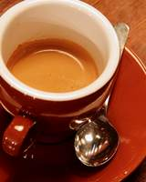

YOUR LIBRARY24 photos
Every shot has a story.
Browse sideways. Swipe diagonally to sort.
↖Edit
↗Keep
↙Maybe
↘Reject
01 / 24
← NEXTPREVIOUS →
Morning ritual
PHOTO #01 · SHOT 1/3



GESTURE TO CLASSIFY0 / 24 SORTED
No long press. Just swipe from the photo.
Finish this trialSubmit when ready